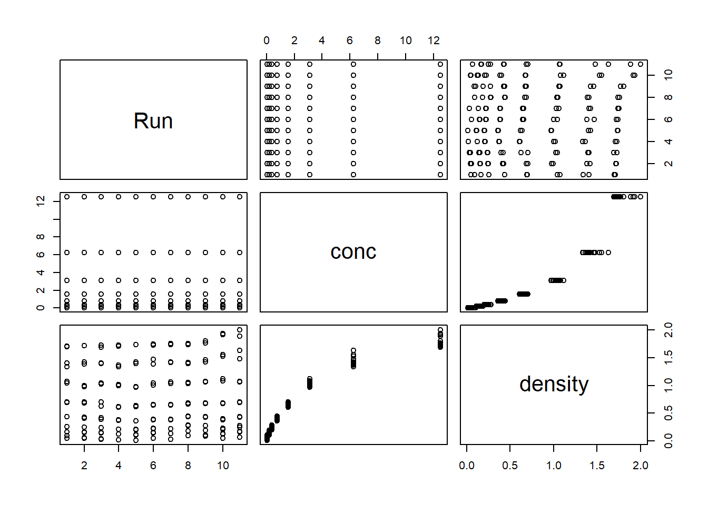
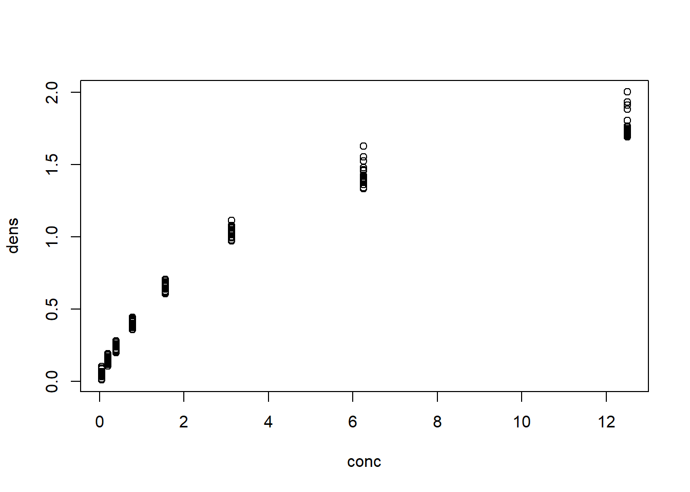
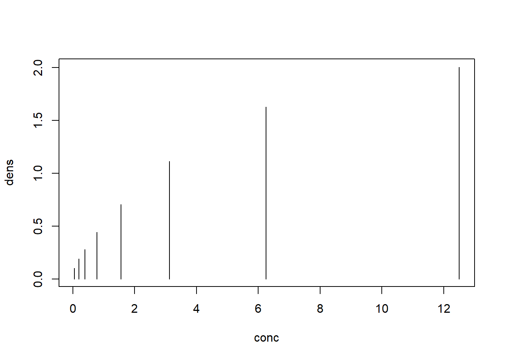
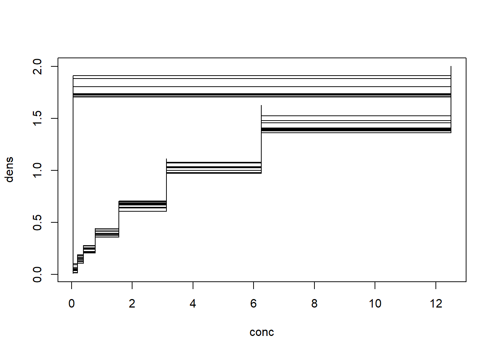
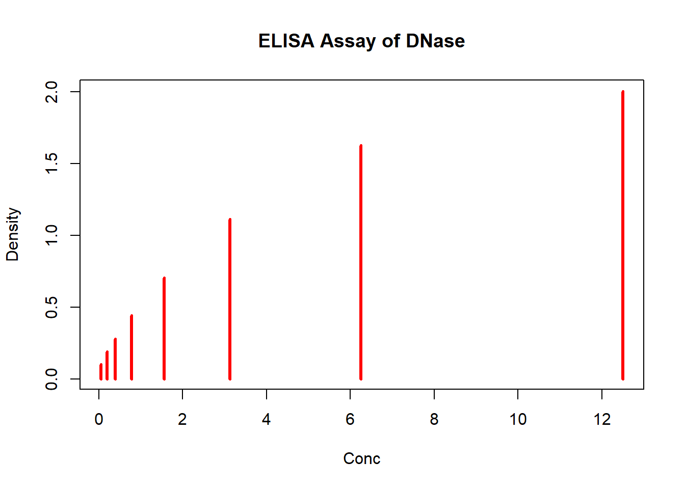
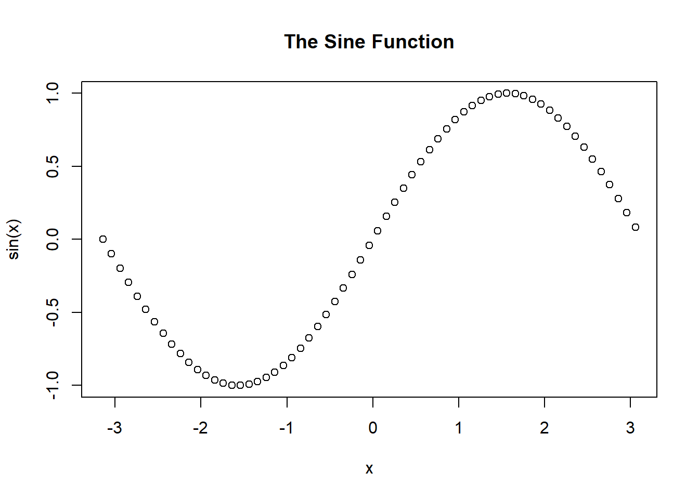
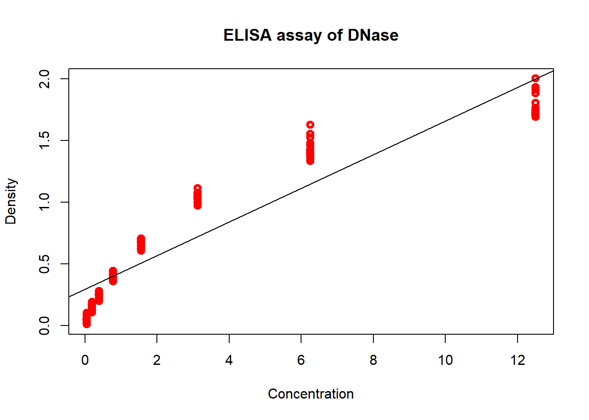
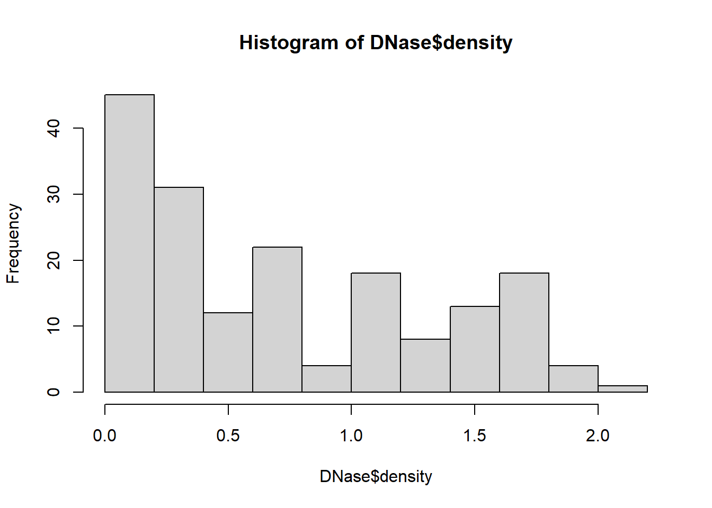
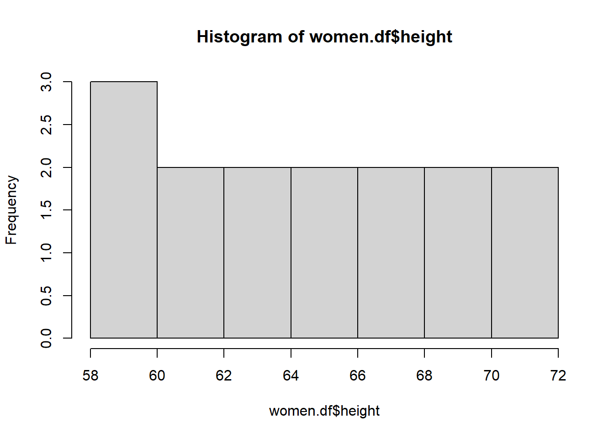
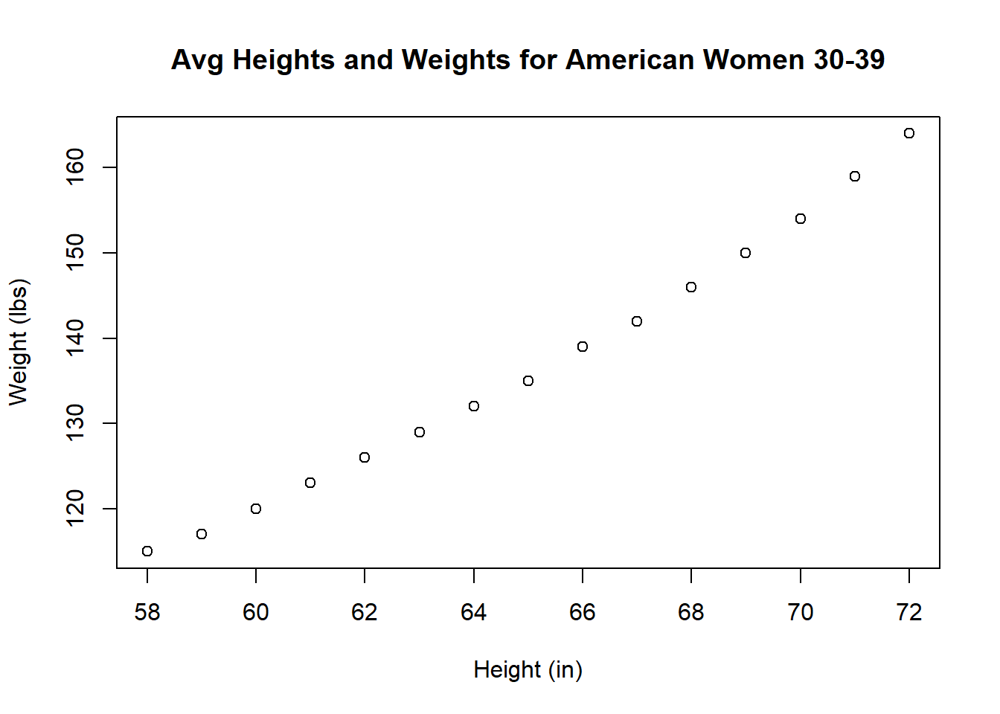

5 Import/Export
Objective:
- Learn how to import (read.csv(), read.delim()) and export tabular data (write.csv(), write.delim())
- Learn how to plot graphs using base R
We will also cover:
- use data sets provided by R
- how to create a new directory/folder using dir.create()
- open several graphics windows
- save plots to file
5.1 Export Tables
** Tips for Preparing Data**
- first row = column headers (variables) and first column = row names (observations)
Row and column names
- should be unique
- shouldn’t begin with a number
- no special symbols (except underscore)
- avoid blank spaces
- avoid blank rows and comments
- use the four digit format for date: Good: 01/01/2016. Bad: 01/01/16
In Excel, save your file into .txt (tab-delimited text file) or .csv (comma separated value file) format.
Working with txt and csv files - R has built-in datasets that we may use (see datasets with data() command)
# Call data into environment with data("dataset")
# Loading DNase data
data("DNase")
# Get more info using ?
# ?DNase
# See first 10 rows with head()
head(DNase, n = 10) ## Run conc density
## 1 1 0.04882812 0.017
## 2 1 0.04882812 0.018
## 3 1 0.19531250 0.121
## 4 1 0.19531250 0.124
## 5 1 0.39062500 0.206
## 6 1 0.39062500 0.215
## 7 1 0.78125000 0.377
## 8 1 0.78125000 0.374
## 9 1 1.56250000 0.614
## 10 1 1.56250000 0.609# basic stats with summary()
summary(DNase)## Run conc density
## 10 :16 Min. : 0.04883 Min. :0.0110
## 11 :16 1st Qu.: 0.34180 1st Qu.:0.1978
## 9 :16 Median : 1.17188 Median :0.5265
## 1 :16 Mean : 3.10669 Mean :0.7192
## 4 :16 3rd Qu.: 3.90625 3rd Qu.:1.1705
## 8 :16 Max. :12.50000 Max. :2.0030
## (Other):80# unique values of a vector with unique()
unique(DNase$Run)## [1] 1 2 3 4 5 6 7 8 9 10 11
## Levels: 10 < 11 < 9 < 1 < 4 < 8 < 5 < 7 < 6 < 2 < 3R base functions for exporting/writing/saving data: * write.table() - exporting any tabular data to “.txt” file * write.csv() - comma separated values,“.csv” file
variations when comma (,) is used as decimal points instead of periods (.): write.csv2()
Arguments:
- file = absolute/local file paths with name of file
- sep = field seperators (sep argument) - character(s), controls the way splits a data table into fields/cells
- header = logical for column names
- row.names = vector of row names or number/name of column which contains the row names
# Create a Data folder
dir.create("Data")
# Write data to txt file: tab separated values
# sep = "\t"
write.table(DNase, file = "Data/DNase.txt", sep = "\t", row.names = FALSE) #"\t" means "tab"
# Write data to csv files:
# decimal point = "." and value separators = comma (",")
write.csv(DNase, file = "Data/DNase.csv")
# Write data to csv files:
# decimal point = comma (",") and value separators = semicolon (";")
# write.csv2(DNase, file = "DNase.csv")5.2 Import Tables
R base functions for importing data
- read.table() - reading any tabular data
- read.delim() - reading tab-separated value files (.txt)
- read.csv() - comma separated value files (.csv)
variations when comma (,) is used as decimal points: read.delim2(), read.csv2()
- file = absolute/local file paths with name of file, file.choose() to choose interactively, internet address e.g. “http://www.sthda.com/upload/boxplot_format.txt”
# Read tabular data into R
# file.choose() allows you to interactively pick a data file
# df <- read.table(file.choose(), header = FALSE, sep = "\t", dec = ".")
# Read "comma separated value" files (".csv")
filename <- "Data/DNase.csv"
df <- read.csv(filename, header = TRUE)
# Read TAB delimited files
df2 <- read.delim(file = "Data/DNase.txt", header = TRUE, sep = "\t", dec = ".")
# Note to save into an object, we must assign to variable!Working with Excel files
- xlsx package
- readxl package
Note: install libraries/packages in R using install.packages(“package_name”). Load intro environment before using with library(package_name)
Writing Data From R to Excel Files (xls|xlsx)
# # install.packages("openxlsx")
#
# library("openxlsx") # or require("openxlsx")
# # Write the first 10 rows in a new workbook
# write.xlsx(DNase[1:10,], file = "Data/DNase.xlsx", sheetName = "DNase 1", append = FALSE)
# # Add a second data set in a new worksheet with first and third column
# write.xlsx(DNase[,c(1,3)], file = "Data/DNase.xlsx", sheetName = "DNase 2", append = TRUE)Reading data From Excel Files (xls|xlsx) into R
# # Use openxlsx package
# my_data <- read.xlsx("Data/DNase.xlsx", sheetIndex = 1) Using R data format: RDATA and RDS
- Save/load variables, user-made functions and data Saving objects
- Save one object to a file: saveRDS(object, file)
- Save multiple objects to a file: save(data1, data2, file)
- Save your entire workspace (all objects): save.image() Loading objects
- readRDS(rds_file), load(RData_file)
# # Save a single object to a file
# saveRDS(DNase, "Data/DNase.rds")
# # Restore it under a different name
# my_data <- readRDS("Data/DNase.rds")
# # Save multiple objects
# save(DNase, my_data, file = "Data/data.RData")
# # To load the data again
# load("Data/data.RData")
# # Saving and restoring your entire workspace:
# # Save your workspace
# save.image(file = "Data/my_work_space.RData")
# # Load the workspace again
# load("Data/my_work_space.RData")Consider using readr package
- Reading lines from a file: read_lines()
- readr functions for writing data: write_tsv(), write_csv()
- readr for reading/writing txt|csv files: read_tsv(), read_csv(), etc
5.3 Graphing with base R
- Now that we can import our data, we can learn how to plot it.
- The purpose of base R plots is to analyze our data, not as elegant for publication purposes
plot()
generic function, meaning it can work with different types of objects
plot() function can be used to plot 2 variables (of equal length) plot(x, y, type=…) Arguments x and y = the coordinates of points to plot type = the type of graph to create, possible values: “p” - points - scatter plot
“l” - lines
“b” - both points and lines
“c” - empty points joined by lines
“o” - overplotted points and lines
“s” and “S” - stair steps
“h” - histogram-like vertical lines
“n” - does not produce any points or lines
main = Title for plot
xlab = Title for x axis
ylab = Title for y axisYou can specify fonts, colors, line styles, axes, reference lines, etc. by adding graphical parameters (cex, col, lwd, etc) Read more: https://www.statmethods.net/advgraphs/parameters.html
Combine plots using par()
Read more: https://www.statmethods.net/advgraphs/layout.html
# You can plot all pairs of variables in one graph
plot(DNase)
# You can also specify vectors to plot
conc <- DNase$conc; dens <- DNase$density
plot(x = conc, y = dens, type ="p") 
plot(x = conc, y = dens, type ="h")
plot(x = conc, y = dens, type ="s")
# Add title
plot(x = conc, y = dens, type ="h",
col = "red", # colour of line
lwd = 3, # width of line
xlab = "Conc", ylab = "Density", # x, y axis labels
main = "ELISA Assay of DNase") # title for plot
Tip: Open graphics windows before calling plot() to view larger plot/several graphs at once
Function - Platform In Windows, windows() or win.graph() In Unix, X11() In Mac, quartz() or x11()
# windows()
x <- seq(-pi,pi, by = 0.1)
plot(x, sin(x), main="The Sine Function")
Plot line graph with regression
Linear regression: statistical analysis technique used to determine the extent to which there is a linear relationship between a dependent variable and one or more independent variables
create simple regression using lm() or “linear model” function
2 common parameters:
+ formula: describes the model with the format “Y-var ~ X-var”, where Y-var is the dependent variable and X-var is independent variable
+ data: the variable that contains the dataset
summary() is used to find the intercept and coefficients (under “Estimate”), R^2 and p-value
Recall: y = mx + b, where m is c
Read more: https://www.r-bloggers.com/r-tutorial-series-simple-linear-regression/
# Plot
plot(DNase$conc, y <- DNase$density,
type = "p", # line graph
col = "red", # colour of line
lwd = 3, # width of line
xlab = "Concentration", # x axis label
ylab = "Density", # y axis label
main = "ELISA assay of DNase") # title of plot
# Make a linear model with the density and concentration variables
fit <- lm (density ~ conc, data = DNase)
fit##
## Call:
## lm(formula = density ~ conc, data = DNase)
##
## Coefficients:
## (Intercept) conc
## 0.2949 0.1366# Get statistics
summary(fit)##
## Call:
## lm(formula = density ~ conc, data = DNase)
##
## Residuals:
## Min 1Q Median 3Q Max
## -0.30901 -0.19640 -0.03957 0.19498 0.48056
##
## Coefficients:
## Estimate Std. Error t value Pr(>|t|)
## (Intercept) 0.29488 0.02072 14.23 <2e-16 ***
## conc 0.13657 0.00406 33.63 <2e-16 ***
## ---
## Signif. codes: 0 '***' 0.001 '**' 0.01 '*' 0.05 '.' 0.1 ' ' 1
##
## Residual standard error: 0.2181 on 174 degrees of freedom
## Multiple R-squared: 0.8667, Adjusted R-squared: 0.8659
## F-statistic: 1131 on 1 and 174 DF, p-value: < 2.2e-16# Add a line to the plot (new layer)
abline(fit)
# Add text to the plot (new layer)
# text()Make a basic histogram of a numeric vector using hist()
- ref: https://rstudio-pubs-static.s3.amazonaws.com/7953_4e3efd5b9415444ca065b1167862c349.html
- Histograms: show frequencies for ranges of values
hist(DNase$density)
Saving to File
1 - Plot by exporting using “Export” in plot panel (bottom-right pane) or in window menu 2 - Plot by opening a file connection Format: type_of_file(“filename”) pdf(rplot.pdf): pdf file png(rplot.png): png file jpeg(rplot.jpg): jpeg file postscript(rplot.ps): postscript file bmp(rplot.bmp): bmp file win.metafile(rplot.wmf): windows metafile Note: Use “dev.off()” to close the connection after plotting
# Create 2 vectors with 10 elements/values
TEN_Random <- runif(10, 0.0, 1.0)
TEN_sequence <- seq(from = 1, to = 30, length.out = 10)
# Make the second value missing in y
TEN_sequence[2] <- NA
# Create a "Plots" directory in your current working directory
dir.create("Plots")
# Save to png file
png("Plots/plot.png") # open "device" connection
plot(x = TEN_sequence, y = TEN_Random, xlab = "Index", ylab = "Random values") # plot
dev.off() #close connection## png
## 2Create an editable graph from R using ReporteRs package
- Editable vector graphics can be created and saved in a Microsoft document
- Read here: http://www.sthda.com/english/wiki/create-an-editable-graph-from-r-software
5.4 Practice
The “women” data set in R gives the average heights and weights for American women aged 30 to 39.
a) Print the first 15 rows to the console. (Hint: use the “n” argument in head() function)
b) Create a folder called “Data Sets” in your current working directory.
c) Write the women data frame as a csv file to the Data Sets folder (exclude row names).
d) Read this file back into R and assign it to a variable called “women.df”.
e) Plot a histogram of the heights column.
f) Find the mean and standard deviation of heights (Recall: vectors tutorial)
g) print the variables from f) in a statement "The mean and standard deviation of the heights is __ and __" (Hint: use sprintf() or paste() )
h) Plot a scatter plot, where x = height and y = weight. Relabel x and y axes to “Height (in)” and “Weight (lbs)” respectively.
i) Save f) to a jpeg file.
Solution
data("women")
# a) Print using head()
head(women, n = 15)## height weight
## 1 58 115
## 2 59 117
## 3 60 120
## 4 61 123
## 5 62 126
## 6 63 129
## 7 64 132
## 8 65 135
## 9 66 139
## 10 67 142
## 11 68 146
## 12 69 150
## 13 70 154
## 14 71 159
## 15 72 164# b) Create a folder using dir.create()
dir.create("Data Sets")
# c) Write to csv using write.csv()
write.csv(x = women, file = "Data sets/women.csv", row.names = F)
# d) Read using read.csv()
women.df <- read.csv(file = "Data sets/women.csv")
# e) Plot histogram using hist()
hist(women.df$height)
# f) Find mean using mean() and standard deviation using sd()
mean.hts <- mean(women.df$height)
sd.hts <- sd(women.df$weight)
# g) Print
sprintf("The mean and standard deviation of the heights is %s and %s", mean.hts, sd.hts)## [1] "The mean and standard deviation of the heights is 65 and 15.4986942614378"paste("The mean of the heights is ", mean.hts, " and ", sd.hts, sep = "")## [1] "The mean of the heights is 65 and 15.4986942614378"# h) Plot using plot()
plot(x=women.df$height, y=women.df$weight, xlab = "Height (in)", ylab = "Weight (lbs)", main = "Avg Heights and Weights for American Women 30-39")
# i) Save as jpeg
jpeg(filename = "heights_vs_weights.jpeg")
plot(x=women.df$height, y=women.df$weight, xlab = "Height (in)", ylab = "Weight (lbs)", main = "Avg Heights and Weights for American Women 30-39")
dev.off()## png
## 2